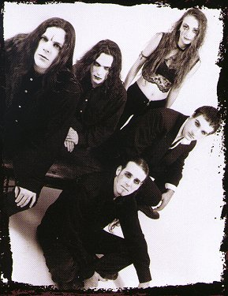
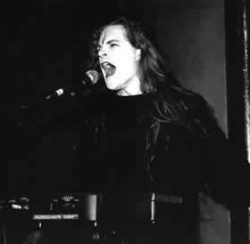

A banda Virgin Black surgiu em meados de
1995 na Austrália, quando então, Rowan London
(vocais, piano e teclados), assiste a alguns ensaios da
banda em que Samantha Escarbe (guitarra), tocava Death Metal.
Ele então a convida para formarem o Virgin Black.
São incorporados a banda Craig Edis (guitarra, vocal),
Ian Miller (baixo, vocal) e Dino Cielo (bateria). Logo em
seguida é gravada a primeira Demo, intitulada apenas
Virgin Black. A demo supera as expectativas e acaba
sendo largamente vendida.
O
significado do nome da banda pode ser entendido pelas palavras
de Samantha: "Virgin/Black, um contraste de pureza
e esperança contra a noite escura da alma e desesperança.
A possibilidade anômala dos opostos existindo como
um."
Com elementos bastante melancólicos,
suas composições flutuam entre o Doom e Gothic
Metal, em temas, muitas vezes cristãos, que remetem
a reflexão, sofrimento, depressão e pessimismo.
A sonoridade cativante de instrumentações
clássicas com violoncelos, violinos e vocais em coro,
originam andamentos arrastados, tristes e densos, que algumas
vezes contrastam com o peso das guitarras e vocais guturais,
dando um ar épico e sombrio. As letras compostas
basicamente por Rowan e Samantha, possuem um lado reflexivo
e expressivo sobre a alma humana e o sentido da vida.
Apesar de ser largamente difundido que
o Virgin Black se trata de uma banda de metal cristão
(white metal), os integrantes refutam tal idéia.
Os onipresentes elementos oriundos de diversas derivações
da religião católica são usados apenas
como referências. Em uma de suas entrevistas Rowan
afirma que um dos principais elementos por trás da
música da banda é o "abuso" da igreja
com relação aos seus fiéis.
Após a promissora Demo, em 1998,
a banda lança o EP Trance, com elementos
experimentais, e aspectos mais clássicos e industriais.
Assim, em 2001 a banda lança seu
primeiro álbum, Sombre Romantic, assinando
com a gravadora "Massacre Records" para a Europa
e "The End Records" para os EUA. Nesse trabalho
obscuro e melancólico as primeiras três faixas
Stare, Embrace e Walk Without Limbs,
vão do mais clássico, sentimental e climático,
ao puro Death/Black Metal. Destaque também para a
faixa Museum of Iscariot, que possui poucos elementos
extremos e grande riqueza de arranjos, melodias e solos,
sendo a mais longa do álbum. Ainda a bela A Poet´s
Tear of Porcelain fecha a obra de forma fantástica,
profunda e hipnotizante.
Em seguida, a banda lança em 2003,
o álbum Elegant... and Dying, distribuído
no Brasil pela Silent Music Records. O trabalho
revela uma grande aposta no lado instrumental, com ênfases
em arranjos sinfônicos, densas passagens de guitarra
que assumem um importante papel em praticamente todas as
músicas, e se contrapõem, por vezes, às
sutis incursões de teclado. Isso é perceptível
logo nas duas primeiras faixas, Adorned In Ashes
e Velvet Tongue. As poucas variações
das melodias contribuem para realçar a sensação
de mergulhar numa atmosfera "acinzentada" e bastante
desacelerada, principalmente em músicas como Beloved
e Renaissance, que aparentando ser um poema, revela
os últimos suspiros de uma pessoa que traz consigo,
reflexões e sentimentos de uma alma maculada por
tormentos, mas também um sentimento de plenitude,
paz e aceitação da morte, com os dizeres Ella
mo fare rifare (Tudo está perdido menos
a esperança) no final. A última faixa
Our Wings Are Burning, resume bem toda a atmosfera
lancinante que perpassa o álbum inteiro. Seu intenso
clima apático é preenchido por cadenciadas
notas tiradas no teclado e na bateria, urros e novamente
um trabalho de guitarras marcando forte presença.
Essa música acaba dando origem ao primeiro videoclipe
da banda.
Logo em seguida a banda parte para uma
turnê pelos Estados Unidos, e também participa
de um festival na Alemanha, tocando ao lado de bandas de
renome como Paradise Lost e Tiamat.
Após quatro anos, o Virgin Black
reaparece com uma obra inesperada e ambiciosa. Trata-se
de uma trilogia chamada Requiem. Os álbuns
são intitulados de Requiem: Pianissimo, Requiem:
Mezzo Forte e Requiem: Fortissimo. Os títulos
são uma clara alusão às anotações
em peças de música erudita que servem para
descrever várias características da música,
como ritmo, por exemplo. No geral eram escritas para alguém
que morreu, como um "ritual funéreo".
Requiem:
Pianissimo utiliza-se somente de instrumentos da música
erudita, como violino, violoncelo, piano, além de
um coral. O segundo álbum, Requiem: Mezzo Forte,
também usa estes instrumentos mas incorpora guitarra,
bateria e baixo. Finalizando a trilogia, Requiem: Fortissimo
deixa de lado os instrumentos de música erudita e
concentra-se somente no vocal, guitarra, baixo, bateria
e teclado. Um dos objetivos é que se toquem os três
álbuns em sequência, o que possibilitará
uma clara compreensão da evolução de
intensidade.
Antes de começarem as gravações
simultâneas dos álbuns o vocalista Rowan London
procura o cantor Agim Hushim, que teve o mesmo professor
de Luciano Pavarotti. Logo na primeira audição
o professor de música erudita fica impressionado
com a voz de Rowan e imediatamente aceita ensinar-lhe técnicas
vocais.
O primeiro álbum a chegar às
lojas em 2007, é o segundo da trilogia, Requiem:
Mezzo Forte. Contando com a presença da orquestra
Sinfônica de Adelaide, o álbum é muito
bem trabalhado nos vocais soturnos, nas orquestrações
e em suas letras, proporcionando um som fúnebre e
relaxante.
Em 2008 é lançado o álbum
Réquiem: Fortíssimo, o último
e mais pesado da trilogia. Embora com a mesma melancolia
e tristeza intrínsecas à banda, os arranjos
leves e acolhedores dão lugar a um peso bastante
carregado, com uma atmosfera letárgica e quase palpável.
As guitarras e os vocais guturais são predominantes
no trabalho, lembrando bandas dos primórdios do Doom
Metal. Já nesse álbum da trilogia é
possível notar que a banda consegue atingir o objetivo
que tinha em mente, demonstrando a diferença de intensidade
entre os álbuns, já que se tem a nítida
impressão de estar escutando o Mezzo Forte numa versão
mais crua e pesada.
O álbum Réquiem: Pianíssimo,
primeira sequência da trilogia, ainda não tem
uma data definida para o lançamento, mais cogita-se
que deva ser no final de 2010.
Dessa forma, com grandes composições,
talento técnico e conhecimento musical profundo,
o Virgin Black vem se tornando um ícone da inovação
do Doom Metal, aliando elementos clássicos com experimentos
impressionantemente bem elaborados.
Por
Spectrum
Download
Disponível: